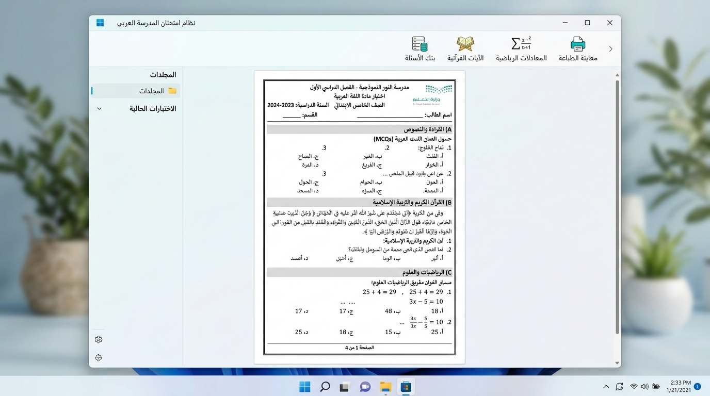

محرر الاختبار... صياغة احترافية لأسئلتك في دقائق وبأعلى المعايير.
وداعاً لتشتت الجداول وانهيار التنسيق في برامج الكتابة العادية. يمنحك محرر الاختبار الذكي بيئة متكاملة مصممة خصيصاً للمعلم: بنك أسئلة متطور، إدراج الآيات القرآنية برسم المصحف العثماني، معادلات رياضية نقية، وترويسة رسمية مع ترقيم آلي فوري.

بيئة متكاملة تريح المعلم في صياغة الاختبارات
كل ما يحتاجه المعلم والمعلمة والإدارة المدرسية من أدوات ذكية ومحررات متخصصة في منصة واحدة سهلة وسريعة.
بنك الأسئلة والخلط الذكي
قاعدة بيانات مدمجة لحفظ وإيداع الأسئلة وتصنيفها حسب المادة والصف والمستوى ونوع السؤال مع بحث وتصفية فورية.
- خلط عشوائي لتوليد نماذج اختبار متعددة لمنع الغش
- حفظ عدد أسطر الإجابة لكل سؤال تلقائياً
- استيراد وإيداع الأسئلة بضغطة زر واحدة
القرآن الكريم بالرسم العثماني
محرك قرآني متطور للبحث في السور والآيات الكريمة وإدراجها برسم مصحف المدينة النبوية الشريف (خط حفص الذكي).
- حفاظ تام على الحركات والتشكيل دون أي تشويه
- تحديد نطاق الآيات وإدراجها مع أرقامها وعلامات الوقف
- وداعاً لمشاكل النسخ واللصق الخاطئ للآيات
معادلات رياضية ومصفوفات
محرر رياضي فائق الدقة لكتابة الكسور، الجذور، التكاملات، المصفوفات، والرموز الكيميائية والفيزيائية بكل سلاسة.
- معادلات بصيغة كائنية متجهة لا تفقد وضوحها أبداً
- دعم كامل للغة العربية والرموز العلمية
- طباعة نقية دون تكسر للخطوط الرياضية
ترقيم تلقائي وحذف ذكي
خاصية حصرية تعيد ترقيم الأسئلة والفقرات والخيارات تلقائياً وفورياً بمجرد حذف أي فقرة دون الحاجة لإعادة التعديل اليدوي.
- حذف الفقرة وإعادة ترقيم تسلسل الاختبار في أجزاء من الثانية
- نقل الأسئلة لأعلى ولأسفل بسهولة تامة
- حماية تامة لتسلسل الأسئلة من أي خلل
قوالب أسئلة متعددة الأعمدة
أنماط أسئلة احترافية مسبقة الإعداد للاختيار من متعدد، الصواب والخطأ، المزاوجة، إكمال الفراغ، والأسئلة المقالية.
- توزيع خيارات الاختيار من متعدد على 1 أو 2 أو 3 أو 4 أعمدة
- تنقل سريع وفوري بين الخيارات بمفتاح Tab
- تنسيق موحد وجذاب يوفر مساحات الصفحة
الترويسة المدرسية والدرجات
ترويسة رسمية جاهزة وفق مواصفات وزارة التعليم بالمملكة، تشمل شعار الوزارة، الإدارة، المدرسة، والزمن، مع جدول رصد الدرجات.
- تخصيص كامل لبيانات المدرسة والمادة والصف
- جدول توزيع ورصد الدرجات القياسي للاختبارات
- متوافقة تماماً مع معايير الاختبارات الرسمية
رموز مجمع الملك فهد
مكتبة مدمجة تشمل كافة الرموز والعبارات الإسلامية المعتمدة (ﷺ، ﷻ، ؓ، ﷰ، البسملة) بخطوط رسمية نقية بضغطة زر.
- إدراج العبارات الشرعية الشائعة بلمسة واحدة
- تنسيق متناسق وفاخر مع خطوط المستند
- عدم الاعتماد على الصور المشوشة أو غير المتطابقة
معاينة وطباعة وتصدير PDF
معاينة دقيقة تحاكي الورقة المطبوعة بنسبة 100% مع تحكم كامل بالهوامش والصفحات، وطباعة مباشرة وتصدير PDF فائق النقاء.
- مخرجات متطابقة تماماً مع ما تراه على الشاشة
- تصدير ملفات PDF حادة وجاهزة لآلات التصوير المدرسي
- تقسيم وتوزيع الصفحات الذكي لمنع تداخل الأسئلة
لماذا «محرر الاختبار» بدلاً من برامج الكتابة العادية؟
صُمم محرر الاختبار لمعالجة كل ما يسبب الإحباط وضياع الوقت في برامج التحرير العامة مثل Microsoft Word عند إعداد الاختبارات.
| وجه المقارنة | ✨ محرر الاختبار الذكي (Exam Editor) | معالجات النصوص العامة (Word وغيره) |
|---|---|---|
| ترقيم وحذف الفقرات | ✓ آلي وفوري إعادة ترقيم تسلسل الأسئلة والخيارات آلياً بمجرد حذف أي فقرة. | ✗ يدوي وشاق يتطلب تعديل أرقام كافة الأسئلة والفقرات التالية يدوياً. |
| الآيات القرآنية الشريفة | ✓ برسم المصحف الشريف محرك مدمج بخط حفص الذكي مع ضبط التشكيل وعلامات الوقف دون أي تشويه. | ✗ تشوه في التشكيل نسخ ولصق خارجي غالباً ما يؤدي إلى تشتت التشكيل والكلمات. |
| توزيع خيارات الاختيار من متعدد | ✓ توزيع ذكي بالأعمدة اختيار (1، 2، 3، أو 4 أعمدة) متوازنة بنقرة زر مع دعم مفتاح Tab. | ✗ جداول معقدة تنفرط صعوبة ضبط المحاذاة والمسافات وانهيار التنسيق عند التعديل. |
| بنك الأسئلة ونماذج الاختبار | ✓ بنك متكامل + خلط نماذج قاعدة أسئلة قابلة للتصفية مع خلط الأسئلة لتوليد نماذج متعددة لمنع الغش. | ✗ غير موجود إطلاقاً يلزم إنشاء وتنسيق كل نموذج اختبار من الصفر يدوياً. |
| الترويسة المدرسية والدرجات | ✓ ترويسة رسمية جاهزة قالب معتمد مطابق لضوابط وزارة التعليم وجدول رصد الدرجات القياسي. | ✗ تصميم يدوي متعب بناء الجداول والهوامش يدوياً وضبطها عند كل مادة وصف. |
| الخصوصية والاتصال بالإنترنت | ✓ 100% بدون إنترنت حماية وسرية تامة لبنوك الأسئلة والاختبارات على جهازك الشخصي. | متباينة بعض الحلول تتطلب اتصالاً سحابياً قد يعرض سرية الأسئلة للخطر. |